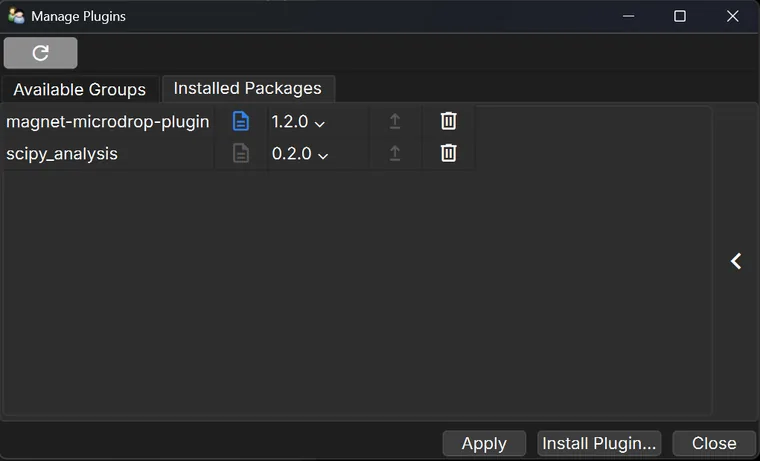
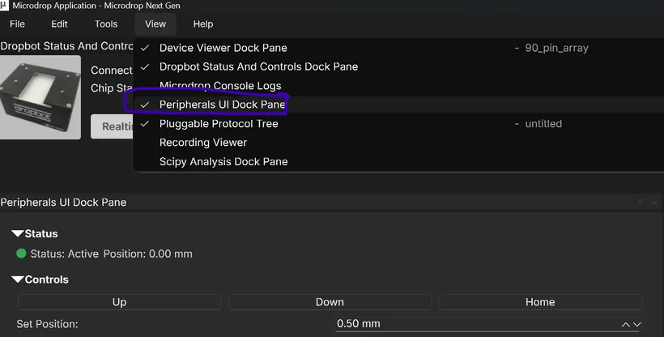
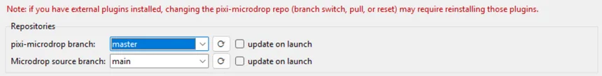

Plugins add hardware and features to MicroDrop: the heater, the magnet (Z-Stage), fluorescence imaging and more.
Tools ▸ Manage Plugins… is where you switch them on and off, install new ones, pick a version, update
them and remove them.
Most changes take effect straight away, without closing MicroDrop. When one cannot, MicroDrop says why and offers
to restart. Start with the short walkthrough; the rest is a reference for every button, window and message.
Overview
There are two kinds of thing to manage, and the window has a tab for each.
Plugin groups (tab Available Groups): parts of MicroDrop you can switch
on and off. A group is a set of pieces that load together, for example the heater's panes and protocol column. Groups
come from the installed plugins, plus a few built into MicroDrop itself such as
Battery status icon (portable rig).
Installed packages (tab Installed Packages): the plugin downloads
themselves. One package can hold several groups. Here you read a plugin's documentation, change its version,
upgrade it or remove it.
New plugins come from the plugin channel, an online list of MicroDrop plugins.
Install Plugin… opens it in a second window, Browse Plugins. A third window,
Plugin Updates, appears by itself at start-up when an update is waiting.

Real screenshot. Manage Plugins, Installed Packages tab:
Refresh the version lists from the plugin channel.
The two tabs.
The package name.
Documentation: blue opens it in your browser; grey means the
package has no link yet.
The installed version. Pick another one here to install it.
Upgrade: green when a newer version exists, grey (as here) when up to
date.
Uninstall.
Show or hide the details pane.
Apply, Install Plugin…, Close.
While Manage Plugins (or Browse Plugins) is open, the main window waits. Esc only clears the selected
row; use Close to leave.
Quick walkthrough
Six short tasks, from switching a plugin on to removing it. Installing and updating need an internet
connection; switching groups on and off does not.
1Open Manage Plugins
Choose Tools ▸ Manage Plugins…. The window opens on Available
Groups: one row per plugin group, with a tick box under Enabled and its name under
Plugin group. A ticked box means the group is loaded now.
2Switch a group on or off
Tick a group (or untick it) and click Apply. Its panes, menu items, protocol columns and
status-bar icons appear (or disappear) at once; MicroDrop does not restart. Your choice is remembered at the next
start. Clicking Close without Apply changes nothing. Try it in
the demo below.
3Install a new plugin
Click Install Plugin…. Browse Plugins opens and fetches the list from
the plugin channel (Fetching available plugins…). It shows only plugins you do not have yet. Click one: the
right side shows its details, including what it depends on. The version cell defaults to the newest; click it to
choose an older one. Click Install, read the Install Plugin?
question and answer Yes. When it is done, Plugin ready says
Installed and enabled …: its groups are already on.
4Choose a version, or upgrade
In Installed Packages, click a package's version and pick another one: MicroDrop asks
Install version? and swaps it in. The version you pick stays until you change it. When the
arrow is green, a newer version exists; click it and answer
Upgrade plugin?. If the version list looks out of date, click
first.
5Uninstall
Click on the package's row and answer Uninstall
Plugin?. MicroDrop switches the plugin's groups off, removes the package and forgets its on/off choices.
If you only want it out of the way, untick its groups instead: that is quicker to undo.
6Answer the Plugin Updates window
Each time MicroDrop starts, it checks the channel in the background. If an installed plugin has a newer version,
or new plugins have appeared since the last check, a Plugin Updates window lists them.
Update All updates every listed plugin; Later closes the window and
changes nothing. Without a connection the check stays silent.
After an install, a version change, an upgrade or an uninstall, MicroDrop either says
Plugin ready (done, nothing else to do) or asks Relaunch required, with
the reason. See Live or relaunch.
What a group adds
Turning a group on loads its parts into the running window; turning it off takes them out again.
Panes dock into the window and are listed in the View menu, like the
built-in ones.
Protocol columns appear in the Protocol Tree, and disappear when the group goes off.
Status-bar icons and menu items come and go with the group.
A backend group has no window of its own: it is the part that talks to the board.
The heater, magnet and fluorescence plugins each come as two groups: a UI group for what you see and a
backend group for the board. To use the hardware, keep both on.

Real screenshot (an earlier build), with the magnet plugin's Z-Stage UI group on:
The View menu lists every pane, including plugin panes; a tick means it is shown.
The magnet plugin's pane, Peripherals UI Dock Pane (ringed).
The same pane docked in the window.
Manage Plugins · Available Groups
Tick a group and Apply to load it now; untick to unload. Choices persist across launches.
Enabled
Plugin group
MicroDrop now
Plugin panes (View menu)
Plugin protocol columns
Plugin status-bar icons
Board drivers (no window)
Try it. Tick and untick groups: nothing changes on the right until you click
Apply. Close throws unapplied ticks away. Switch the heater UI on,
then off: its column's values are kept for the rest of the session (shown in italics) and come back when you switch it
on again. The group names are the real ones from the plugins; the pane, column and icon names on the right are
placeholders, except the magnet's pane.
Protocol columns and saved protocols
Switching a group off removes its columns from the open protocol. The values are kept in memory: switch the
group back on in the same session and they return on the same steps. Steps you added meanwhile get the column's
default.
Saving while a column is missing writes the protocol without that column's values.
Opening a protocol that has a column from a plugin that is not loaded shows
Protocol has errors: … column(s) in this protocol have no matching plugin; their values
will be dropped on load. OK opens it without those values;
Cancel leaves it unopened. Switch the plugin's group on first, then open the protocol
again.
Versions, pinning and updates
MicroDrop never changes a plugin's version on its own. A version changes only when you install,
pick a version, click upgrade or click Update All.
Install (Browse Plugins) installs exactly the version shown in the row, the newest unless you
picked another, and records that exact version.
Picking a version in Installed Packages removes the package and installs the one you picked, so
nothing of the old one is left behind. That version is fixed (pinned) until you change it again.
Upgrade and Update All install the
newest version on the channel, the same remove-and-install way. That also ends a pin.
The version lists come from MicroDrop's saved copy of the channel list. It is refreshed whenever the channel is
read: when Browse Plugins opens, at start-up, and when you click .
A pinned older version still counts as out of date: the Plugin Updates window lists it at every start.
Click Later to keep it.
Manage Plugins · Installed Packages
magnet-microdrop-plugin
Try it. Publish a new version: the upgrade arrow stays grey until the saved list is
refreshed (, or a new start). Pick an older version to pin it, start
again to see the Plugin Updates window, then upgrade. Version numbers are made up.
The Plugin Updates window
It has up to two boxes. Updates available lists installed plugins with a newer version, as
name: installed --> newest. New plugins available lists plugins that appeared on the
channel since the previous check, with a hint to install them from Manage Plugins (the hint says Browse; the
button is Install Plugin…). New plugins are not listed on the very first check, which only
records what the channel offers.
Update All (shown only when there are updates) switches each plugin off, updates it, and
switches it back on. If some fail, Some updates failed names them and why; those stay on their
old version. Later closes the window; it comes back at the next start while an update is
waiting.
Live or relaunch
Python cannot unload code it has already loaded. So MicroDrop applies a change live only when that is
safe, and otherwise asks you to restart.
Switching groups with Apply is always live.
Install, version change, upgrade: MicroDrop first switches the plugin off and clears its code,
then changes the package, then loads the new code. This is live as long as the change touched only this plugin's
package and added new ones. If it also changed or removed other packages that may already be in use, a
relaunch is needed.
Uninstall is live when only packages were removed.
When a relaunch is needed, Relaunch required says what was done, then Could not apply
without a relaunch: and the reason, and asks Relaunch MicroDrop now to apply?Yes closes MicroDrop (saving the window layout) and starts it again with its standard
microdrop task. No shows Relaunch later: The change
takes effect the next time you launch MicroDrop.
After clicking Install: what did the install do?
Try it. Tick what happened during an install of heater-microdrop-plugin 1.12.0
and read the message MicroDrop would show. The reasons are the app's own wording.
The relaunch always starts MicroDrop's standard microdrop task. If you normally
start MicroDrop some other way, for example from the Launcher with a saved profile, answer No
and start it again yourself.
Toolbar icons
Hover over a button in MicroDrop to see its tooltip.
Buttons Manage Plugins and Browse Plugins
Icon
Button
What it does
Refresh available versions from the plugin channel
Manage Plugins, top left. Reads the channel again and updates every version list. Needs a connection; a failure shows Refreshing versions with the reason.
Refresh the plugin list from the channel
Browse Plugins, top left. Fetches the list of plugins again.
Open documentation
Opens the plugin's documentation (or home page) in your web browser. Greyed, with the tooltip Documentation link available after the plugin's next release., when the package does not give a link.
Upgrade to …
Green when a newer version is in the saved channel list; the tooltip names it. Grey with Already up to date otherwise, and then it does nothing.
(uninstall)
Asks Uninstall Plugin?, then removes the package.
Show/Hide Details
The tall button at the right of the Installed Packages table. It opens a details pane (package, installed version, available versions, documentation link, plugin groups) for the selected row. Hidden at first.
Terms
The words the windows and messages use.
Plugin group Available Groups tab, Plugin group column
A set of plugin parts that load and unload together, with one tick box.
What it is
Each plugin package says which groups it has. The heater, for example, has
Heater UI (status/controls and plotting dock-pane + protocol column + statusbar icon) and
Heater backend (board driver). The name usually lists what the group adds.
When to use it
Switch a group off when you do not have that hardware on the bench, or to tidy the window; switch
it on when you need it.
How to read it
Ticked = loaded now. A box that is clear again after Apply means the group
could not be loaded; the log says why.
Typical value
Groups of a newly installed plugin start on.
Enabled Available Groups tab, Enabled column
Whether a group is loaded, and whether it loads at the next start.
What it is
The tick box. Apply loads or unloads the groups you changed and saves each
choice in MicroDrop's settings file, so it survives a restart, even a crash.
When to use it
Every time you want a plugin's panes and columns, or want them gone.
How to read it
The box shows the live state when the window opens. Ticks you have not applied yet do nothing.
Typical value
A group you never touched uses its plugin's default: on for the heater, magnet and fluorescence
groups. Battery status icon (portable rig) is on by default only on the portable rig's
Raspberry Pi.
A plugin download (a conda package) that is in MicroDrop's environment.
What it is
MicroDrop runs on its own set of software packages, managed by a tool called pixi in the
pixi-microdrop folder. A plugin is one more package in that set. The Installed Packages tab lists every installed
package that contains a MicroDrop plugin and is not part of MicroDrop itself, including plugins that came with your
MicroDrop install.
When to use it
Look here to see what is installed and at which version.
How to read it
The name is the package name, for example heater-microdrop-plugin. Built-in groups, such
as the battery icon, are never listed here: they cannot be uninstalled.
Typical value
On the classic DropBot rig: the heater, magnet and fluorescence plugins.
Version Installed Packages tab, version drop-down; Browse Plugins, version cell
Which release of a plugin is installed, or will be.
What it is
Plugins are released with numbers like 1.2.0; a bigger number is newer. The drop-down lists the
versions in MicroDrop's saved copy of the channel list, newest first, and always includes the one installed.
When to use it
Pick an older version when a newer one causes a problem in your experiments, or to match another
instrument.
How to read it
The shown value is what is installed. Picking another asks Install version?;
No puts the drop-down back.
Typical value
The newest release.
Pinned version Installed Packages tab, version drop-down
A version you picked on purpose, kept until you change it.
What it is
Installing from Browse Plugins, or picking a version, records that exact version in the
environment. Upgrade and Update All replace it with "the newest". MicroDrop shows no pin label; the version simply
stays.
When to use it
To stay on a known-good version during a study.
How to read it
A green upgrade arrow next to it is normal: a newer version exists, and you chose not to take it.
The Plugin Updates window will list it at every start.
Typical value
Not pinned to an old version: most labs run the newest.
Upgrade Installed Packages tab, upgrade arrow; Plugin Updates, Update All
Replace a plugin with the newest version on the channel.
What it is
MicroDrop switches the plugin off, removes the package, installs the newest one and switches it
back on, live when it can. If a step fails, the old version is put back and switched on again, and a message shows
what went wrong.
When to use it
When the arrow is green, or the Plugin Updates window lists the plugin. Not in the middle of a
run: the plugin's panes close while it is replaced.
How to read it
Green arrow = a newer version is in the saved list (its tooltip names it). Grey = up to date, as far
as the saved list knows.
Typical value
Upgrade when you are between experiments.
Uninstall Installed Packages tab, delete icon
Remove a plugin package from MicroDrop's environment.
What it is
After Uninstall Plugin? (This removes its package from the
environment.), MicroDrop switches the plugin's groups off, forgets their on/off choices and removes the
package. If removing fails, it shows the error and switches the plugin back on.
When to use it
When you no longer use that hardware at all. To hide a plugin for a while, untick its groups
instead.
How to read it
Plugin ready with Uninstalled … means done; protocols that use its
columns will then warn when opened (see above).
The online list MicroDrop plugins are installed from.
What it is
A conda channel at https://prefix.dev/microdrop-plugins. Browse Plugins lists it, and
every install makes sure MicroDrop's environment knows about it. Every read saves a copy of the list on this computer.
When to use it
Read when Browse Plugins opens, when you click a refresh button, and once at every start.
How to read it
Browse Plugins shows a package's file details for its newest version: version, build, size, date,
web address, checksums and dependencies.
Typical value
https://prefix.dev/microdrop-plugins
Offline mode Browse Plugins, Offline message
What MicroDrop does when it cannot reach the plugin channel.
What it is
Browse Plugins then shows the last saved list, with the message Offline:
Could not reach the plugin channel — showing the last cached list. The start-up update check says nothing.
Version drop-downs use the saved list.
When to use it
On an instrument without internet, or when the network is down.
How to read it
You can look, but installing, changing versions and upgrading still need the channel and will fail
with pixi's message. Switching groups on and off works offline.
Typical value
Online.
Hot load / unload After Apply, install, upgrade, version change or uninstall
Loading or unloading plugin parts while MicroDrop keeps running.
What it is
MicroDrop adds the plugin's parts to the open window (panes, columns, icons, menus) or takes them
out. Ticking a group is always hot. Installs, version changes, upgrades and uninstalls are hot when they are
safe.
When to use it
Automatic; you do not choose it.
How to read it
Plugin ready = it was applied live. A newly loaded pane docks where
MicroDrop puts it; move it as you like.
Typical value
Usually live for a first install of a plugin.
Relaunch required Relaunch required message
A change that only takes effect after MicroDrop restarts.
What it is
Shown when a change could not be applied live, with the reason, for example existing packages
were changed or removed: …. The package change itself is already done.
When to use it
Answer Yes when you are not running anything; No to
restart later yourself.
How to read it
Until you restart, the old code may still be the one running.
Typical value
Uncommon for a plain install; more likely when an update also moved a shared library.
Messages you may see
Every window title in plugin management, in the order you are likely to meet them.
Title
When
What to do
Loading plugins
Browse Plugins is fetching the channel.
Wait.
Offline
The channel could not be reached; the saved list is shown.
Check the network, then refresh.
Could not load plugins
Fetching failed for another reason.
Read the message; try again.
No selection
Install with no row selected.
Click a plugin first.
Install Plugin?
Before installing: name, version, dependencies, and installing runs third-party code that has not been verified. Only install plugins you trust.
A feature needs a package the environment does not have.
See below.
When a feature needs a package
Sometimes MicroDrop's own code is newer than its environment: a feature needs a package that was
never installed. Instead of failing, MicroDrop offers to update.
Update required names the feature and the package, for example: Sending experimental
folders to the Trash needs the send2trash package, which this environment does not have. Update the pixi-microdrop
repository to install it.
It also says what the update does: the pixi-microdrop folder is switched to its default branch (named in the message) and updated, local
changes to its pyproject.toml, pixi.lock and other tracked files are discarded, and the
plugins you installed from the channel are added back afterwards (they are listed by name).
Update runs it behind Updating MicroDrop; Not
now leaves everything as it is.
On success, Update complete: … can continue. The package is loaded into the running
MicroDrop, so you do not restart. If it cannot be loaded, the message asks you to restart MicroDrop.
On failure, Update failed shows why and the exact commands to run by hand, after closing
MicroDrop.
Plugins you picked a version for are added back at that version. Plugins that came with the MicroDrop install are
not part of that list; the update brings them in itself.

Real screenshot of the MicroDrop Launcher, a separate program not covered here. Its Git
settings tab gives the same warning: changing the pixi-microdrop folder by hand can drop the plugins you installed;
reinstall them from Manage Plugins afterwards.
Caveats
Internet needed. Installing, changing versions, upgrading and refreshing all read the plugin
channel. Switching groups does not.
Not during a run. Install, upgrade, version changes and uninstall switch the plugin off while
its package changes; its panes close and its hardware stops being driven.
Some changes need a relaunch. MicroDrop says so and why. The relaunch uses the standard
microdrop task, not a Launcher profile.
Columns and saved protocols. Switching a group off hides its protocol columns; the values come
back if you switch it on again before closing MicroDrop. Saving meanwhile, or opening a protocol without the plugin,
loses those values (opening warns first).
Pinned versions keep asking. An older version you chose is listed in Plugin Updates at every
start; answer Later.
The saved channel list can be old. If an upgrade arrow or version list looks wrong, click
.
Only install plugins you trust. A plugin is code that runs inside MicroDrop with your access to
the instrument and files.
Glossary
Plugin
An add-on that gives MicroDrop new panes, columns or hardware support.
Plugin group
The parts of a plugin that switch on and off together.
Package
A downloadable piece of software; a plugin ships as one.
Environment
The set of packages MicroDrop runs on, kept in the pixi-microdrop folder.
pixi
The tool that installs and removes those packages. MicroDrop runs it for you.
Channel
An online list of packages to install from; MicroDrop's is prefix.dev/microdrop-plugins.
Backend
The part of a plugin that talks to the board, with no window of its own.
Dock pane
A panel inside the MicroDrop window; the View menu lists them.